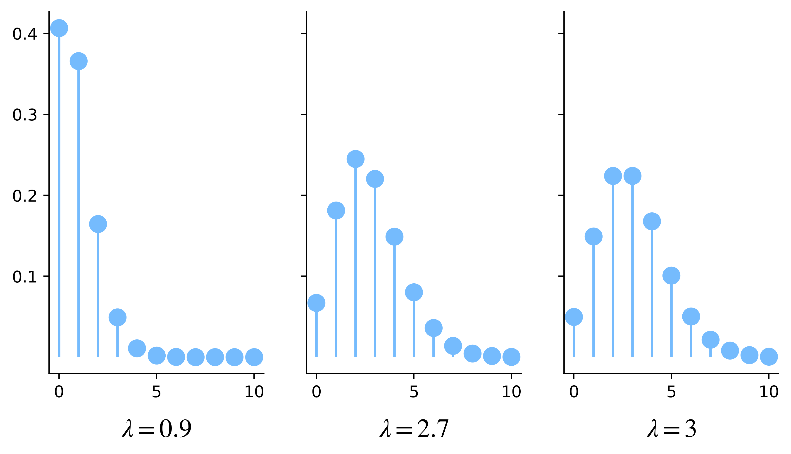
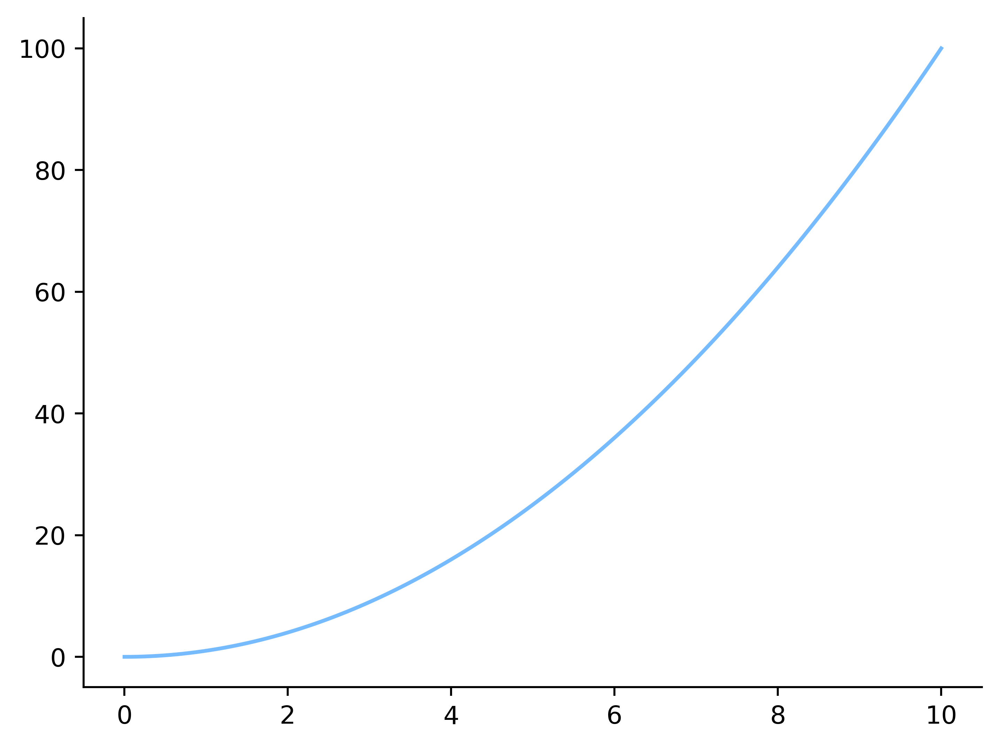

13.5. Le distribuzioni di Poisson#
Consideriamo un esperimento binomiale nel quale il numero \(n\) di ripetizioni è elevato. Questo fatto non cambia la validità delle formule che descrivono la distribuzione della variabile aleatoria \(X \sim \mathrm B(n, p)\) che conteggia il numero di successi. Consideriamo però il codice che ho introdotto nel Paragrafo 13.2.4 per il calcolo dei quantili, e che riporto qui di seguito per comodità.
from scipy.special import binom
def quantiles(n, p, levels):
x = 0
pdf = (1-p)**n
cdf = pdf
quantiles = []
for q in levels:
while cdf < q:
pdf *= (n - x) / (x + 1) * p / (1 - p)
cdf += pdf
x += 1
quantiles.append(x)
return quantiles
Nel corpo della funzione quantiles, la variabile pdf viene inizializzata
al valore che corrisponde a \((1 - p)^n\). Ora, se \(n\) assume un valore elevato.
diciamo dell'ordine delle decine di migliaia, indipendentemente dal valore di
\(p\) è ragionevole il risutato del calcolo della potenza venga memorizzato come
\(0\), tenendo conto della precisione dei numeri in virgola mobile. Analoghe
considerazioni valgono per esempio per il calcolo della funzione di massa di
probabilità. In casi come questo, se il valore elevato di \(n\) è in qualche
modo controbilanciato da un valore basso di \(p\), è possibile introdurre una
nuova famiglia di distribuzioni che permette di approssimare quella di \(X\).
In particolare, fissato \(\lambda \in \mathbb R^+\) consideriamo una successione di variabili aleatorie \(X_1, X_2, \dots\), dove per ogni \(n \in \mathbb N\) si ha \(X_n \sim \mathrm B(n, p_n)\) e \(n p_n = \lambda\). La funzione di massa di probabilità di una generica variabile di questa successione è tale che
Per analizzare il generico andamento di questa funzione, vale la pena studiare il rapporto \(\rho\) tra i valori che essa assume per due valori successivi della relativa specificazione:
così che:
\(\rho > 1\), e quindi \(f_X(x+1; \lambda) > f_X(x; \lambda)\), se e solo se \(x < \lambda - 1\),
\(\rho = 1\), che equivale a \(f_X(x+1; \lambda) = f_X(x; \lambda)\), se e solo se \(x = \lambda - 1\),
\(\rho < 1\) nei casi rimanenti.
Tenuto conto del fatto che le specificazioni \(x\) assumono valori interi non
negativi, da queste relazioni si ricava che in funzione di \(\lambda\) si hanno
tre differenti situazioni possibili, illustrate anche nella
Figura $s:
se \(\lambda \not\in \mathbb N\) e \(\lambda < 1\), \(f_X(0; \lambda)\) rappresenta il massimo valore di massa di probabilità, la relativa funzione è strettamente decrescente e \(0\) è la moda della distribuzione;
quando \(\lambda \not\in \mathbb N\) ma \(\lambda > 1\), la funzione di massa di probabilità è inizialmente crescente e ha un massimo nel valore modale \(\lceil \lambda \rceil\), poi decresce;
quando \(\lambda \in \mathbb N\) la situazione è simile al punto precedente, ma in questo caso vi sono due valori modali: \(\lambda - 1\) e \(\lambda\).
Show code cell content
import matplotlib.pyplot as plt
import numpy as np
import scipy.stats as st
from myst_nb import glue
def poisson_graph(lambda_, ax):
n = 10
x = np.arange(0, n+1)
X = st.poisson(lambda_)
ax.vlines(x, 0, X.pmf(x))
ax.plot(x, X.pmf(x), 'o')
fig, axes = plt.subplots(1, 3, sharey=True, figsize=(8, 4))
for lambda_, ax in zip([0.9, 2.7, 3], axes):
poisson_graph(lambda_, ax)
ax.set_yticks([0.1, 0.2, 0.3, 0.4])
ax.set_xlabel(rf'$\lambda = {lambda_!r}$')
plt.show()
glue("poisson-pmfs", fig, display=True)

Fig. 13.14 Grafici della funzione di massa di probabilità per le distribuzioni di Poisson di parametro \(0.9\) (sinistra), \(2.7\) (centro) e \(3\) (destra).#
13.5.1. Momenti della distribuzione di Poisson (*)#
La funzione generatrice dei momenti di una generica distribuzione di Poisson ha una particolare forma, nella quale compare un doppio elevamento a potenza, come ottenuto nel seguente risultato.
Theorem 13.12
Dato \(\lambda \in \mathbb R^+\), la funzione generatrice dei momenti di una variabile aleatoria \(X \sim \mathrm P(\lambda)\) assume la seguente forma:
Proof. Dalla definizione di funzione generatrice dei momenti si ottiene
dove il valore della somma infinita è ottenuto considerando lo sviluppo in serie di Taylor dell'elevamento alla potenza di \(\mathrm e\), centrata in \(0\).
Il calcolo delle derivate di \(m_X\) si può esprimere in un'elegante forma ricorrente, infatti
e più in generale
Calcolando le prime due derivate in zero si ottengono i primi due momenti: \(\mu'_1 = \lambda\) e \(\mu'_2 = \lambda + \lambda^2\), in coerenza con quanto abbiamo già visto per il calcolo di media e varianza di questa distribuzione. I successivi due momenti sono
Per calcolare i momenti centrali, introduciamo \(Y \coloneqq X - \lambda\) e calcoliamo le derivate della funzione generatrice dei momenti di \(Y\) applicando il Theorem 12.3:
Azzerando le prime due quantità si ottiene, come atteso, \(0\) (il valore atteso di una variabile aleatoria alla quale è stato sottrato il suo valore atteso) e \(\lambda\) (la varianza della distribuzione di Poisson). Azzerando le rimanenti due si ottengono i relativi momenti centrali:
e pertanto la skewness della distribuzione di Poisson è uguale a
che risulta sempre positiva, riflettendo il fatto che indipendentemente dal valore del suo parametro, la massa di probabilità della distribuzione è concentrata in modo relativamente vicino a \(0\), ma è sempre presente una coda infinita a destra. Analogamente, la curtosi è
che anche in questo caso è un valore positivo: la distribuzione di Poisson è dunque sempre leptocurtica, e la ragione è dovuta alla presenza della coda a destra che non è controbilanciata da un'analoga coda a sinistra. Va anche sottolineato che la curtosi è per questa distribuzione sempre uguale al quadrato della skewness, e ciò facilita la scrittura del codice alla base della Figura 13.15 che illustra il grafico skewness-curtosi per la famiglia delle distribuzioni di Poisson.
Show code cell content
import matplotlib.pyplot as plt
import numpy as np
from myst_nb import glue
fig, ax = plt.subplots()
skewness = np.linspace(0.001, 10, 500)
kurtosis = skewness**2
plt.plot(skewness, kurtosis)
plt.show()
glue("poisson-sk-plot", fig, display=True)

Fig. 13.15 Il grafico skewness-curtosi per la famiglia delle distribuzioni di Poisson.#